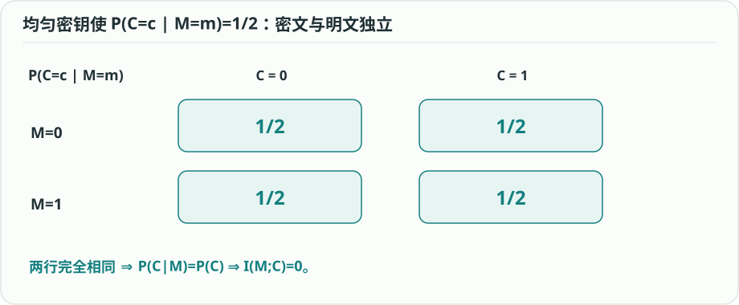
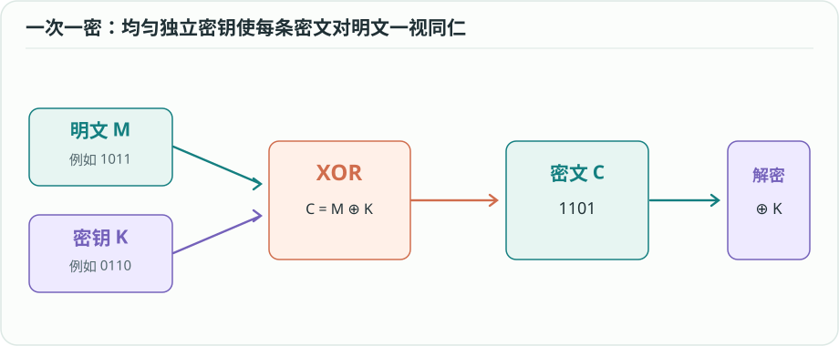
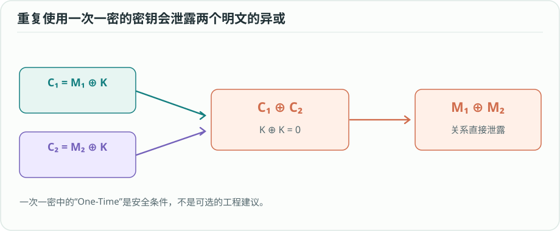

密文公开之后，窃听者还能知道多少明文信息？
密码系统的目标不是让密文“看起来随机”，而是限制密文对明文所提供的信息。即使攻击者知道算法和密文，只要密钥保密，明文仍可能完全不可推断；反过来，即使密文外观复杂，若它改变了攻击者对明文的概率判断，系统就不具备完善保密性。
信息论提供了一个与攻击者算力无关的定义：观察密文前后，攻击者对明文的不确定性必须完全相同。这是非常强的统计保证，不等同于“目前还没有人破解”。
完善保密：明文与密文统计独立
设 M 是明文随机变量，C 是密文。完善保密要求对所有具有正概率的 c 和所有 m，观察 C=c 不改变 M 的后验分布：
等价地，M 与 C 独立，互信息为零：
这一定义依赖消息、密钥和加密过程的概率模型。只对某一个固定消息做一次 XOR，不能证明整个密码系统具备完善保密性。

一次一密：均匀、独立、等长、只用一次
一次一密对等长二进制消息和密钥执行 C=M⊕K，解密再次异或同一密钥即可恢复 M。若 K 是与 M 独立的均匀随机比特串，则对每个固定 m，C 都均匀分布于所有可能密文，因此观察密文不会改变明文概率。

“一次”是关键约束：密钥必须独立均匀、至少与消息同长、不可重复使用，并且要通过安全方式预先共享。随机数生成质量、密钥分发、存储和销毁都属于系统安全的一部分。
Shannon 密钥熵下界：必要，不是充分
对满足零错误、可唯一解密的完美保密系统，Shannon 的熵下界为：这一必要条件不要求密钥 K 与明文 M 独立；它使用的是完善保密 I(M;C)=0 与 H(M|C,K)=0。一次一密的具体构造则额外要求密钥与明文独立且均匀。
这是一条必要条件，不是充分条件。单凭 H(K) 足够大，不能保证加密映射满足明文与密文独立；还必须检查密钥分布、独立性、加密函数和解密正确性。对均匀消息的有限集合，还有密钥空间大小至少不小于消息空间大小的对应结论。
一次一密通过均匀随机密钥实现完善保密，但代价是密钥材料与消息等长，且无法安全复用。这与现代对称密码的设计目标不同：现代算法通常用短密钥换取在资源受限攻击者模型下的计算安全，而不是无条件的统计独立。
复用密钥为什么会立即暴露明文关系？
若两条消息使用同一个密钥 K，则 C₁=M₁⊕K、C₂=M₂⊕K。攻击者将密文异或，密钥便抵消：

from examples.advanced_information import otp_encrypt, otp_decrypt
cipher = otp_encrypt("1011", "0110")
assert cipher == "1101"
assert otp_decrypt(cipher, "0110") == "1011"假设明文 M 均匀且独立，C=M XOR K。仅 q=0.5 的均匀密钥使单比特密文达到完善保密。
当 q≠0.5 时，密文仍是均匀的（因为明文均匀），但密文与明文不再独立；这说明“密文边缘分布看起来均匀”不足以证明保密。
窃听信道：从共享密钥转向信道本身的保密能力
Wyner 的窃听信道模型包含合法接收端 Y 与窃听者观察 Z。编码器利用两条信道的差异，在合法接收端可靠译码的同时，尽量减少 Z 对消息的互信息。对退化离散无记忆窃听信道，若满足 Markov 链 X→Y→Z（窃听者观察 Z 是合法接收端输出 Y 的进一步退化版本），经典保密容量可写成：
这里的退化条件和信道结构非常重要；不能把这个简式当作任意窃听信道的一般容量公式。该模型说明信息论安全不仅研究加密密钥，也研究通信链路的物理统计结构。
信息论安全、计算安全与完整性不是同一个目标
完善保密约束的是信息泄露；计算安全约束攻击者在给定资源下成功概率；完整性和认证则要阻止或检测主动篡改。CRC 不提供认证，普通哈希也不自动提供密钥认证；实际系统常用经过分析的 AEAD 构造，同时提供机密性和完整性。
来源与延伸阅读
- C. E. Shannon (1949), Communication Theory of Secrecy Systems：完善保密定义与密钥下界。
- Shannon (1949) full text：后验概率不变的原始定义与等长密钥讨论。
- A. D. Wyner (1975), The Wire-Tap Channel：合法信道与窃听信道的保密容量。
- Ho, Chan, Grant & Uduwerelle (2012), Error-Free Perfect Secrecy Systems：密钥熵下界的无误差解密条件。
- MIT 6.5620 Lecture 1: Perfect Secrecy and the One-Time Pad：完善保密定义、OTP 与 Shannon 密钥空间下界。